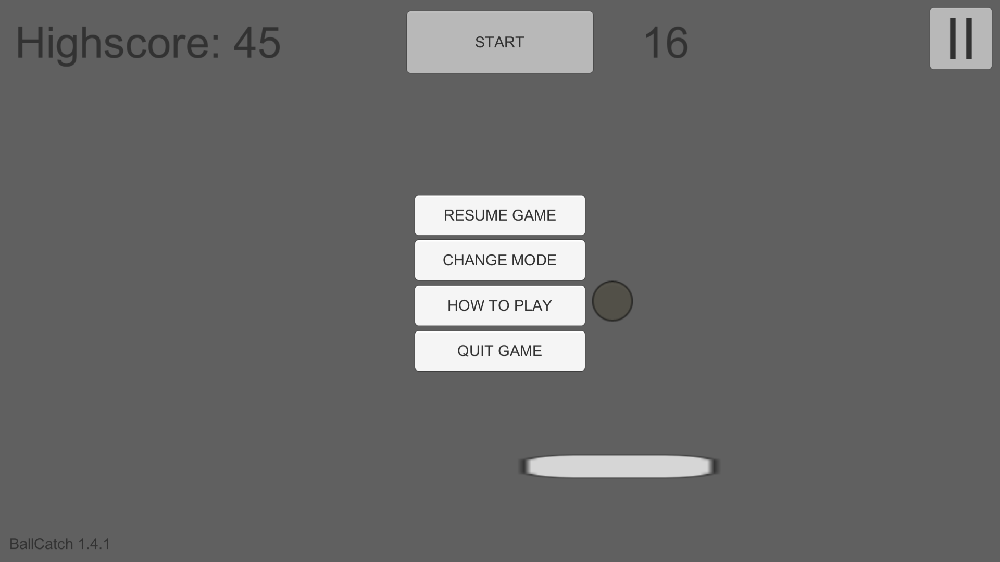

Game manual - BallCatch 1.4.3
In the normal mode you simply have to catch balls by moving the platform with the left and right arrow keys or
by clicking/touching the left and right sides of the screen. Start the game by clicking/touching the
"Start" button or Space.

You can pause the game by clicking/touching the pause button in the upper right corner or by pressing Esc.
Resume the game by pressing Esc, the pause button or the "Resume game" button.
You can quit the game by pressing the "Quit game" button.
Change between the normal and powerup modes by clicking/touching the "Change mode" button.
In the powerup mode you still catch balls with the platform, but you can buy two kinds of powerups. You get $1 for each
catched ball. The amount of money you currently have is shown on the bottom right.
When you buy one "ignore missed" powerup
(the "X" icon on the right or I), you can miss one ball without losing the game. You can buy multiple to be able to
miss multiple balls. The "ignore missed" powerup costs $5.
You can also buy the "half speed" powerup (the "0.5" icon on the right or H), which makes the balls fall at
half speed for 30 seconds. You can buy multiple of them as well, in which case the balls will fall at half speed for longer.
The "half speed" powerup costs $50 per every 30 seconds.
(C) 2019 Rasmulisone Games